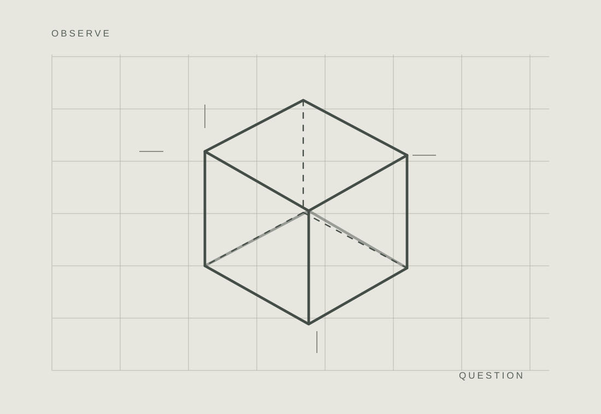

Research / selected work
Research
An interest in how people learn, reason and construct meaning through experience.

Learning through touch
Research with Björn Hedin on embodied and tangible STEM learning: the role of physical objects, measurement and interaction.
View project
Learning through contrast · Japan 2026
Classroom observations and collaborative activities across Japanese educational settings, considered in dialogue with Swedish practice.
View project
Objects for thinking
3D models and classroom materials designed to make abstract concepts accessible to the hands.
View projectEarlier research
My scientific background is in medical science and receptor biology, followed by pharmaceutical R&D. Career details are listed in the curriculum vitae.